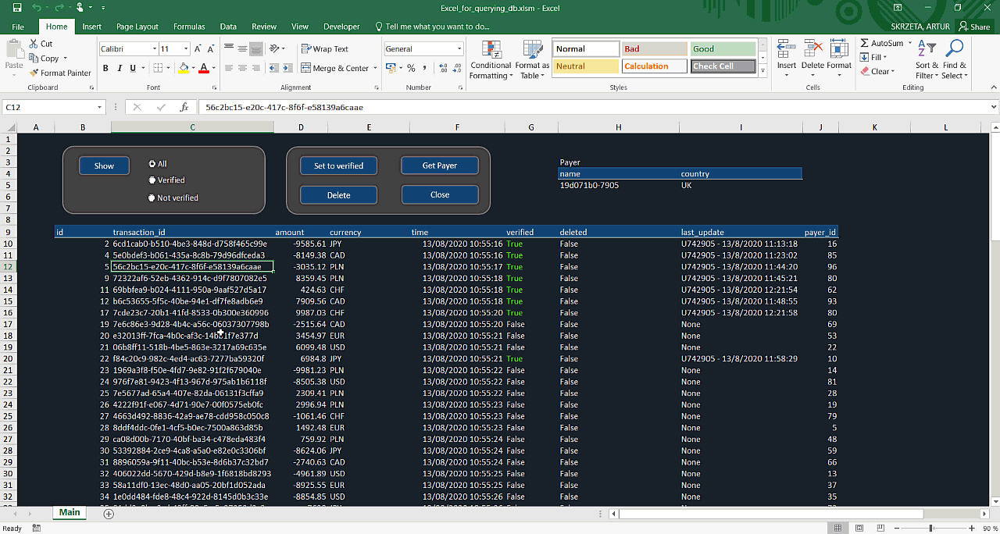
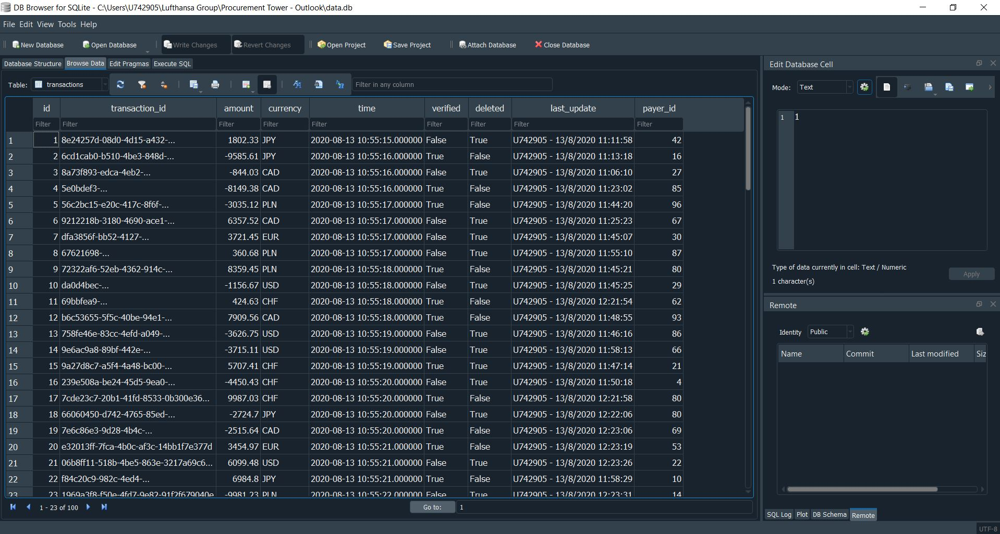

Excel UI for querying SQL database
Intro
Using Excel and restrictive programmed logic to interact with SQL database. With that solution we can protect the database and prevent user from sending undesirable queries.

- VBA code dictates what queries user can send to database.
- Excel connecting SQLite is bulit in the way user doesn't have to know any SQL queries.
- User can simply retrieve, update and delete data with Excel interface instead.
Features
App includes following features:
Demo
User Interface:
Database:
Setup
- Excel VBA and SQLite integraion requires SQLite3 ODBC Driver installation and adding it in the system ODBC administartion panel.
1. Download sqliteodbc.exe from http://www.ch-werner.de/sqliteodbc/,
2. Start installation on your computer,
3. Run ODBC administartion panel,
4. In User DSN tab add new User Data Source,
5. Give it a name and browse for db file,
6. Accept by clicking OKs. - Anoter useful piece of software is DB Browser for SQLite which allows us to view data schemas and data tables themsleves as well as to query db (printscreen above).
- One of the best functions is when having more extended select query you can save the outcome of it into CSV file for further processing/analysis.